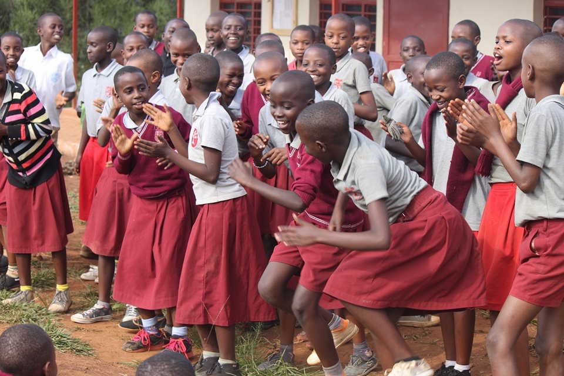

Languages
Three languages, every year
English, Kinyarwanda and French are taught daily from nursery to Primary 6. Four of our 23 teachers are language specialists who work across all three schools rather than sitting in one age division.
Kinyarwanda teachers2
French teachers2
Medium of instructionEnglish, from P4